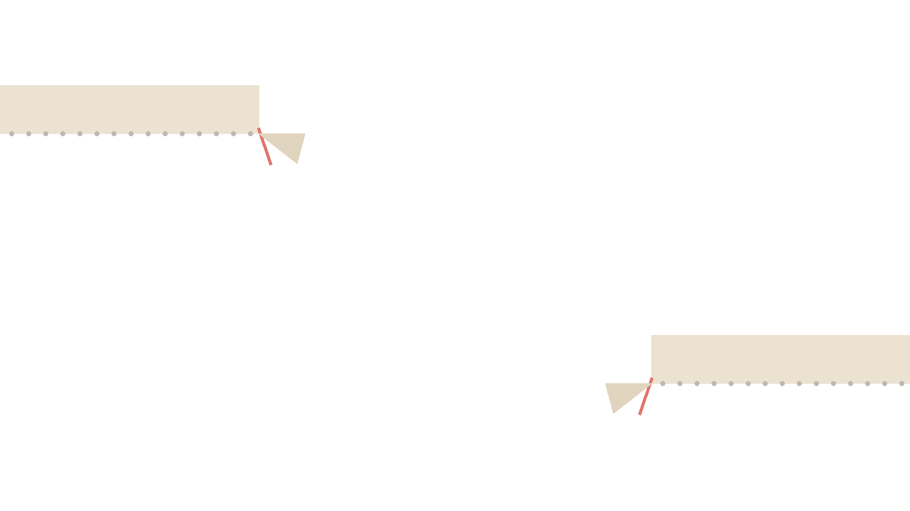

RECRUIT ／ 募集票
宣伝は、みんなに。
募集は、その人に。
宣伝と募集は別のものです。宣伝はサーバー全体を知ってもらう行為、募集は足りない役割や一緒に遊ぶ相手を具体的に呼ぶ行為。書き方も、置く場所も変わります。
そのまま写せる、募集の型。
8件／全8件できたばかりのサーバーへ
人数が少ないことを隠さないほうが、かえって来ます。「これから作る」に乗りたい人は一定数います。
すでに人がいるサーバーへ
活動の様子を1行入れると、生きているサーバーだと伝わります。人数より「いつ動いているか」です。
運営を手伝う人を探す
何をしてほしいかを具体的に。「管理者募集」だけだと、権限目当ての人が来ます。
作れる人を探す
報酬の有無を最初に書いてください。書かないと問い合わせが来ません。
一緒に遊ぶ人を呼ぶ
いつ・何人が命です。ここが無い募集は、ほぼ反応がありません。
作業を一緒にする人を呼ぶ
喋らなくていい、という一言があると入りやすくなります。
フレンドを探す
個人間のやり取りになります。知らない相手に個人情報を渡さないでください。
止まったサーバーを動かす
止まっていた事実を書いたほうが、戻ってきます。無かったことにすると不信感になります。
目 次
01宣伝と募集の違い
向ける相手が違う
| 比べる点 | 宣伝 | 募集 |
|---|---|---|
| 相手 | 不特定多数 | 条件に合う人 |
| 伝えること | サーバー全体 | 足りない役割・一緒にやること |
| 書き方 | 3行（何の／誰向け／何がある） | 4つ（何を・いつ・何人・どんな人） |
| 置く場所 | 宣伝サーバー・一覧サイト | 募集掲示板・サーバー内の募集部屋 |
| 頻度 | 継続して貼る | 必要な時だけ |
使い分ける場面
- 人が全然いない → 宣伝（まず知ってもらう）
- 人はいるが役割が足りない → 募集（このページ）
- 今から一緒に遊びたい → 募集（サーバー内で十分）
02募集の書き方
書くのは4つ
宣伝は3行でしたが、募集は「何を・いつ・何人・どんな人」の4つです。上のテンプレはすべてこの形になっています。
条件は絞るほど当たる
宣伝では対象を広げたくなりますが、募集は逆です。「誰でもいいです」と書くと、読んだ人は自分のことだと思いません。「21時から2人」のほうが、「いつでも誰でも」より人が来ます。
締めの一言を入れる
これが無いと、後から見た人が反応してよいか分かりません。数分で終わることですが、書いてある募集は次も信用されます。
03募集掲示板・募集サイト
募集掲示板とは
Web上にある募集専用の掲示板です。サーバーのメンバー募集、ゲームの募集、フレンド募集などを投稿できます。投稿が一覧として残るため、後から見た人にも届きます。
宣伝掲示板との違い
宣伝掲示板はサーバーそのものを載せる場所、募集掲示板は今やりたいことを載せる場所です。ただし両方を受け付けているサイトが多いので、実際には同じ場所を使い分けることになります。種類は宣伝できる場所にまとめています。
投稿する時の注意
- 同じ内容を連投しない——ほとんどの掲示板で禁止です
- 古い募集を消す・締める——残っていると問い合わせが来続けます
- 招待リンクは期限なしで——切れていると入れません（作り方）
04募集Bot
募集Botとは
サーバー内で募集の投稿を整った形にしてくれるBotです。人数・開始時刻・参加ボタンなどを自動で管理してくれます。手書きの募集が流れて分からなくなるのを防げます。
入れるタイミング
募集が1日に何件も出るようになってからで十分です。1日1件なら手書きのほうが速く、Botの設定を覚える手間のほうが大きくなります。Botを入れる順番はサーバーの運営で書いています。
05フレンド募集の注意
個人情報を渡さない
本名・住所・学校名・電話番号・年齢を書かないでください。フレンド募集は個人間のやり取りになるため、宣伝や募集より距離が近くなります。相手が良い人でも、その投稿は他の人にも見えています。
DMでのやり取り
やり取りがDMへ移ったら、サーバーの運営からは見えなくなります。何かあっても止められません。怪しいと感じたらブロックして構いませんし、それで失礼になることもありません。

06募集しても人が来ない時
- 条件が無い——いつ・何人・どんな人が抜けていないか（一番多い原因）
- 募集だけ繰り返している——運営が困っている印象になります。活動の様子も一緒に見せてください
- 場所が違う——サーバー内で足りないなら、外の募集掲示板へ
- そもそも人がいない——募集ではなく宣伝の段階です
問よくある質問
ディスコードの宣伝と募集はどう違いますか？
宣伝はサーバー全体を知ってもらう行為で、募集は足りない役割や一緒に遊ぶ相手を具体的に呼ぶ行為です。宣伝は不特定多数へ、募集は条件に合う人へ向けて書きます。書き方も置く場所も変わります。
ディスコードの募集掲示板とは何ですか？
Web上にある募集専用の掲示板です。サーバーのメンバー募集、ゲームの募集、フレンド募集などを投稿できます。投稿が一覧として残るため、後から見た人にも届きます。
募集Botとは何ですか？
サーバー内で募集の投稿を整った形にしてくれるBotです。人数・開始時刻・参加ボタンなどを自動で管理します。人が集まってから入れれば十分で、最初から必要なものではありません。
募集の仕方が分かりません。何を書けばいいですか？
何を・いつ・何人・どんな人と、の4つです。宣伝の3行と違い、募集は条件が具体的なほど当たります。曖昧な募集は誰も自分のことだと思いません。
フレンド募集もできますか？
できます。募集掲示板にはフレンド募集の枠があることが多く、ゲームや趣味が合う人を探せます。ただし個人間のやり取りになるため、知らない相手に個人情報を渡さないでください。
募集しても人が来ないのはなぜですか？
条件が書かれていないことがほとんどです。いつ・何人・どんな人かが無いと、読んだ人は自分が対象か判断できません。また募集だけを繰り返すと運営が困っている印象になるため、活動の様子も一緒に見せてください。